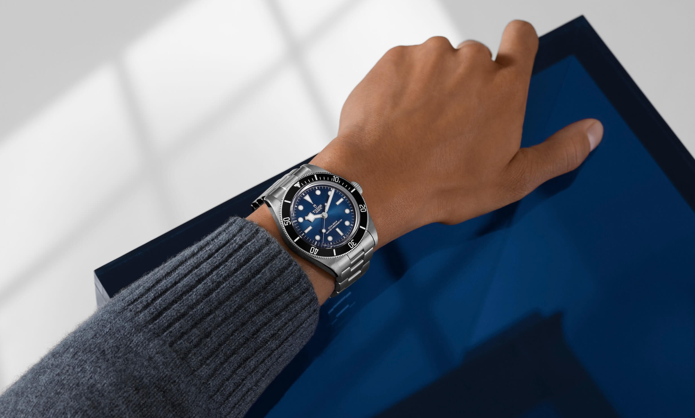
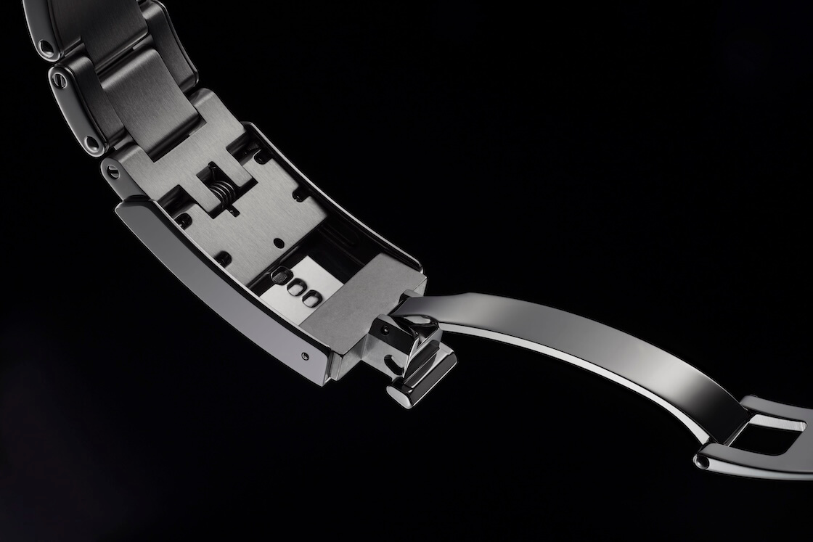
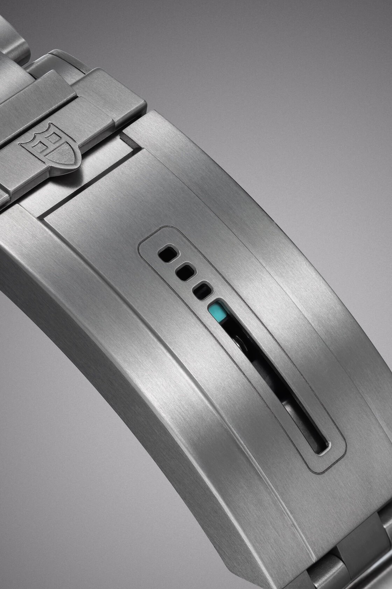
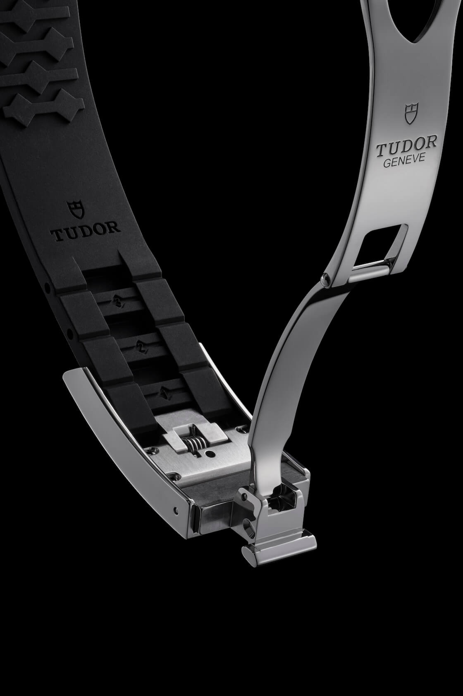

The Tudor T-Fit Quick-Adjustment Clasp System
Here at StrapHunter we are less concerned with specs and more with the real-life feel of a watch. We focus on wearability and practical, everyday use because ultimately comfort is key. Luckily, recent advancements in watchmaking have focused on wearer comfort, particularly through various bracelet adjustment systems. Today we write about the T-Fit, a quick adjustment system, a development designed to improve the wearability of Tudor's watches.
 Nenad Pantelic • July 17, 2025
Nenad Pantelic • July 17, 2025

The Tudor T-Fit system is an integrated, tool-free adjustment mechanism located in the clasp. This system provides an 8mm range of adjustment. The adjustment is distributed across five positions. To adjust the length of a bracelet you simply lift the clasp head and pull a double-female endlink, which allows a horizontally spring-loaded component to slide within the clasp.
This means you can easily loosen your watch on a hot day when your wrist expands or tighten it up for a more secure fit during activity.
Let's Break It Down
I have to say Tudor's T-Fit is a smart and elegant solution for getting the perfect fit. Here are the key features:
First of all it is completely tool-free. You do not need a spring bar tool, a paperclip, or any special equipment. Adjustments are made simply by sliding the inner endlink, allowing you to resize it on the go.
Secondly, it is quick and "on the Fly". To be honest, the adjustment is instantaneous. It takes only a few seconds to slide the bracelet to one of the five available positions over an 8mm range.

The entire mechanism is housed cleanly within the clasp. Unlike bulky ratcheting systems that can extend and stick out, the T-Fit maintains the bracelet's streamlined and uninterrupted look.
The action is secure and spring-loaded. The T-Fit system uses an internal spring-loaded component that slides and clicks into place.
Finally, there are some high-tech components. The T-Fit clasp uses ceramic ball bearings, a detail usually found in higher-end watchmaking. Ceramic is incredibly hard, so it prevents the metal-on-metal friction that can wear out a clasp over time.
The T-Fit system has some practical benefits across many scenarios. For daily use T-Fit addresses natural fluctuations in wrist size, which can occur due to temperature changes, physical activity, or fluid retention.
In specialized applications, for an example in diving, the system enables rapid tightening over a wetsuit or loosening after the dive.
T-Fit Slowly Evolves
It is great to see that Tudor's clasp technology has undergone continuous development. The original Tudor Pelagos (introduced in 2012) had a clasp with three fixed adjustment points and a spring-loaded system that automatically expanded and contracted, designed for dive suit compensation.
Then in 2021 came the T-Fit clasp, a tool-free micro-adjustment system which uses a horizontally spring-loaded piece that slides manually.
This year we saw the introduction of the Pelagos Ultra. This watch features a "new version of the T-Fit clasp" that builds on the spring loaded system introduced with the original Pelagos.

T-Fit Across Tudor Collections
The T-Fit clasp has been implemented across several of Tudor's collections since its introduction in 2021.
The Black Bay line features T-Fit integration on models including the Black Bay (41mm), Black Bay 54 (37mm), Black Bay 68 (43mm) and the all-burgundy Black Bay 58 (39mm). The Black Bay Pro (39mm) and the Black Bay Chrono (41mm) also incorporate this system. Additionally, the T-Fit is present on Black Bay 31, 36, and 39mm models (Black Bay One collection).
Within the Pelagos line, the T-Fit clasp is found on the Pelagos 39 and the Pelagos Ultra (43mm). The Ranger model is also equipped with the T-Fit.
The T-Fit clasp is available across various bracelet styles, including the 3-link "rivet-style" bracelet, the 5-link bracelet, and form-fitted rubber straps.

A Ripple Through the Industry
I have to say: T-Fit as more than just a clever piece of engineering or a marketing gimmick. It really works well. It truly represents a big step forward in the everyday wearability and user experience of a modern Tudor watch.
Some may say that the T-Fit system is a proprietary technology exclusive to Tudor, and that an application is limited to this brand. In response, I would say that its success has sent an undeniable ripple through the industry.
We are now seeing other brands rushing to create their own on-the-fly adjustment systems, which is great news for watch buyers everywhere.
Let's be honest: these kinds of quality-of-life upgrades are not typically demanded by the average person shopping for a watch. The demand comes from dedicated enthusiasts. Tudor proves that brands are listening to their most passionate fans, and it is just cool to see a practical, enthusiast-driven innovation like the T-Fit take off and push the entire market.